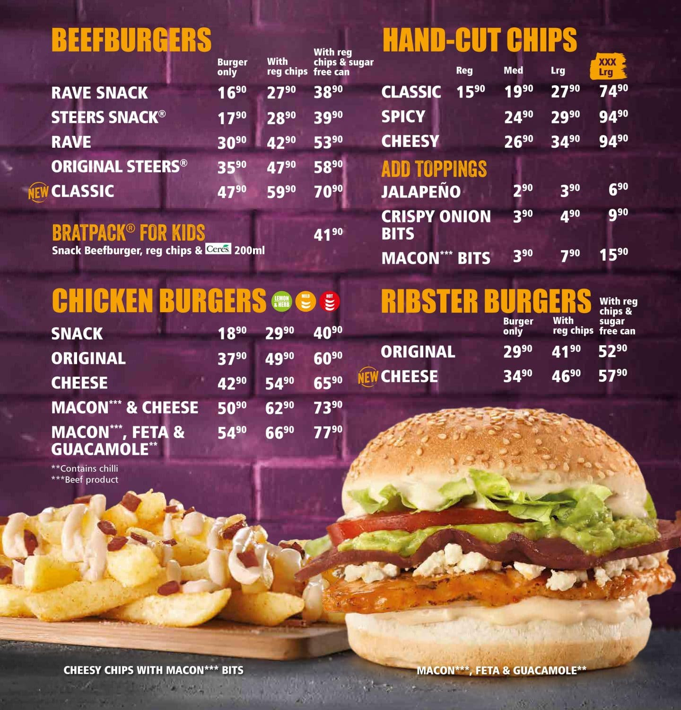

STEERS
Got Cheese King Steer® Meal
Summer is here! That means the things that make December, Dezemba, must happen! So, while you’re living big and enjoying the vibes, don’t let hunger get in your way. Continue living big with the big meal that gives you more cheese for your cheese. Grab the Got Cheese King Steer® Burger Meal for only R89.90. It’s a double cheeseburger with 2x 100% pure beef patties topped with a slice of cheese and bacon, plus lashings of our creamy cheese sauce, and a side portion of small hand-cut chips. This big, juicy, and cheesy burger meal will keep you going throughout Dezemba.
We don’t just make food. We make food with thought.Food that is good for the environment, for local communities, and for you. Now more than ever, the world needs more eco-conscious brands, so we’ve pledged to do better for the future of our planet. We’re committed to preparing the freshest meals with quality ingredients. We also tirelessly try to find sustainable ways to produce our meals.We responsibly and ethically strive to source from eco-conscious suppliers who sustainably manage resources. We make a positive impact on the environment by constantly thinking of ways to reduce, recycle, and reinvent our food packaging. And we always keep your wants and needs top of mind.All this thought goes into our food, and we never stop thinking about how we can make it even better. That’s why it’s not just food, it’s food with thought
Check out our delicious menu
